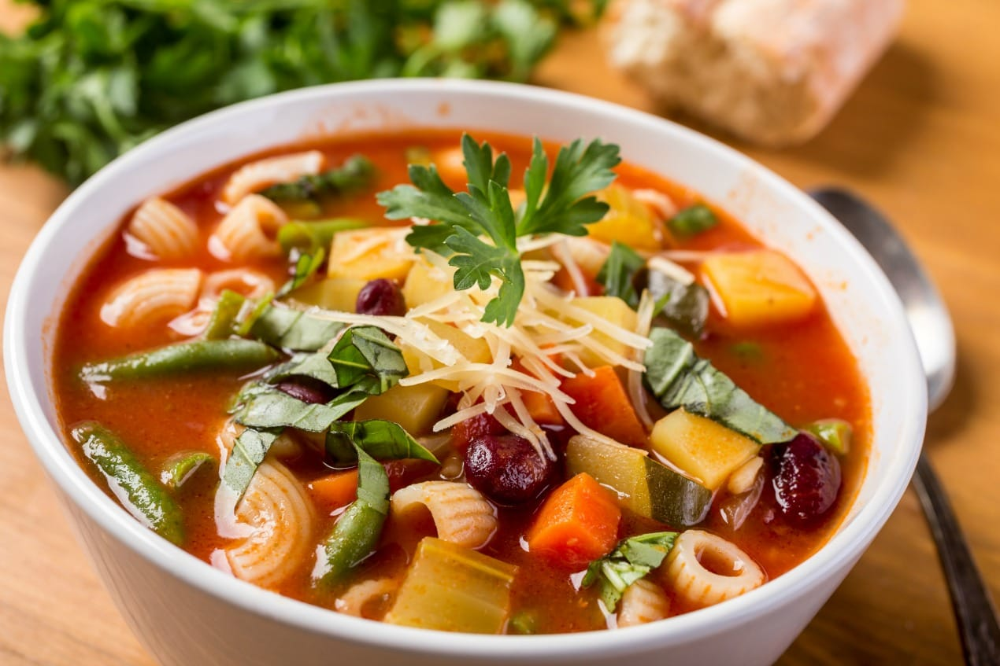

01
Lasagna
Lasagna is a classic Italian dish renowned for its rich, comforting
layers of pasta, cheese, and savory sauce. It is a true culinary
masterpiece, combining the simplicity of quality ingredients with a
complex, layered preparation process.
Get Recipe
02
Ravioli
Ravioli, an iconic Italian dish, is a testament to the culinary
heritage of Italy. These delectable pockets of pasta encapsulate a
rich history of craftsmanship and flavor. With its origins deeply
rooted in the medieval times of Lombardy and Liguria, ravioli has
evolved into a timeless classic cherished for its versatility and
delicate taste.
Get Recipe
03
Bruschetta
Bruschetta, a beloved Italian antipasto, epitomizes the simple, yet
exquisite, flavors of the Mediterranean. Originating from central
Italy, this delightful dish showcases the perfect harmony of crusty
bread, robust garlic, ripe tomatoes, fragrant basil, and the finest
extra virgin olive oil.
Get Recipe
04
Risotto
Risotto, an emblem of Italian culinary finesse, is a beloved rice
dish renowned for its creamy texture and harmonious melding of
flavors. Hailing from the northern regions of Italy, this timeless
delicacy is crafted from Arborio, Carnaroli, or Vialone Nano rice,
each chosen for their unique ability to absorb flavors while
maintaining a firm, yet creamy, consistency.
Get Recipe
05
Cannoli
Cannoli, a classic Italian dessert, hails from the Sicilian region
and has gained international acclaim for its irresistible
combination of flavors and textures. Traditionally, it consists of
tube-shaped shells of fried pastry dough, filled with a sweet,
creamy ricotta-based filling.
Get Recipe
06
Polenta
Polenta is a traditional Italian dish with a rich history, originating from Northern Italy. This delectable cornmeal-based delight boasts a smooth, creamy texture, and is a versatile accompaniment to various dishes. Its simple preparation and adaptable nature make it a beloved staple in Italian cuisine.
Get Recipe
07
Minestrone
Minestrone is a traditional Italian vegetable soup that is known for its rich flavors and hearty texture. This comforting dish is typically made with a variety of seasonal vegetables, beans, and pasta, all simmered together to create a delicious and wholesome meal.
Get Recipe

08
Carpaccio
Carpaccio is a renowned Italian appetizer that originates from Harry's Bar in Venice, Italy. This dish typically features thinly sliced raw meat or fish, often beef or tuna, that is delicately seasoned and garnished with flavorful accompaniments.
Get Recipe
09
Gnocchi
Gnocchi, a traditional Italian dish, is a delectable type of pasta made from a soft dough of potatoes, flour, and sometimes eggs. These delightful, pillow-soft dumplings are renowned for their delicate texture and ability to absorb the flavors of accompanying sauces.
Get Recipe
10
Fettuccine Alfredo
Fettuccine Alfredo is a timeless Italian pasta dish renowned for its rich and creamy sauce enveloping perfectly cooked ribbons of fettuccine. Originating in Rome, this indulgent creation has become a global favorite, celebrated for its simplicity and decadent flavor profile.
Get Recipe